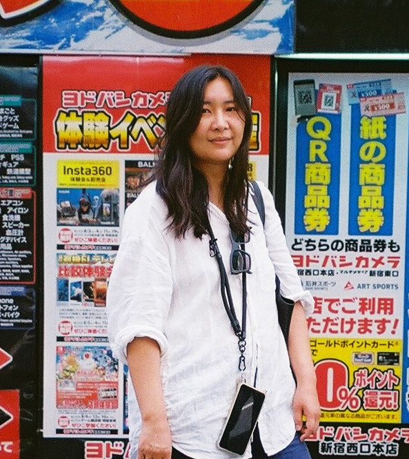
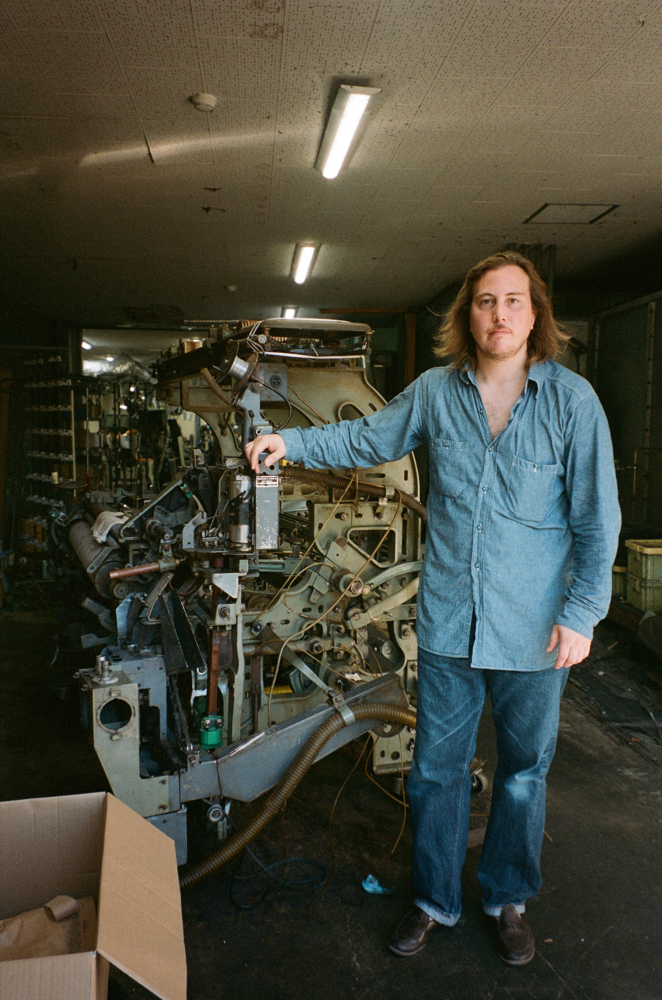

DENIM LEGENDS:
THE LAST WEAVERS OF JAPAN
A French artisan travels to rural Japan to learn from the last master shuttle-loom weavers.
A documentary film by Jiawa Liu
A French artisan travels to rural Japan to learn from the last master shuttle-loom weavers.
A documentary film by Jiawa Liu
Denim Legends: The Last Weavers of Japan follows Arthur Leclercq, a Paris-based denim artisan, through a two-month apprenticeship at a historic selvedge denim mill in Okayama — an opportunity never before granted to a foreigner.
In suffocating midsummer heat, amid the noise of post-war shuttle looms and without a shared language, Arthur learns to operate and maintain machines that built Japan's reputation for the world's finest denim. Through observation and silent collaboration, he forms bonds with the artisans who keep this craft alive.
The film reveals a world rarely seen, and even more rarely filmed — one that may not survive intact.


In the hills of Okayama Prefecture, a few family-run mills still operate on vintage shuttle looms from the 1940s and '50s. These machines built Japan's reputation as the global benchmark for selvedge denim weaving.
Today, that knowledge is under threat. The challenge is not demand — Japanese selvedge denim is more sought after than ever — but the scarcity of people capable of operating and maintaining the old looms. As veteran craftsmen retire, the expertise required to keep these machines running is fading with them.
Beyond the film itself, Denim Legends is an attempt to build lasting connections between the people, institutions, and communities who care about the future of this craft — bringing together weavers, makers, and cultural organisations around a shared commitment to its preservation and transmission.

Jiawa Liu is a London and Paris-based filmmaker and creative director. Her background spans a decade of editorial and film work for international publications and luxury brands, including Harper's Bazaar and Vogue. She founded Beige Pill Productions in 2019, a creative studio focused on visual storytelling across film, fashion, and craft. Denim Legends is her first independent long-form documentary.
@beigerenegade
Arthur Leclercq is a Paris-based denim artisan and founder of Superstitch, an atelier in the 6th arrondissement dedicated to traditional denim construction. Recognised internationally for his mastery of vintage machinery and deep knowledge of denim history, he is among the very few outside Japan capable of operating the full range of specialised machines required to construct a pair of jeans to golden-era standards.
@superstitchmfgparisDenim Legends is currently in post-production. The filmmakers welcome contact from press, cultural institutions, and organisations aligned with the preservation and transmission of endangered craft knowledge.
projects@beigerenegade.com